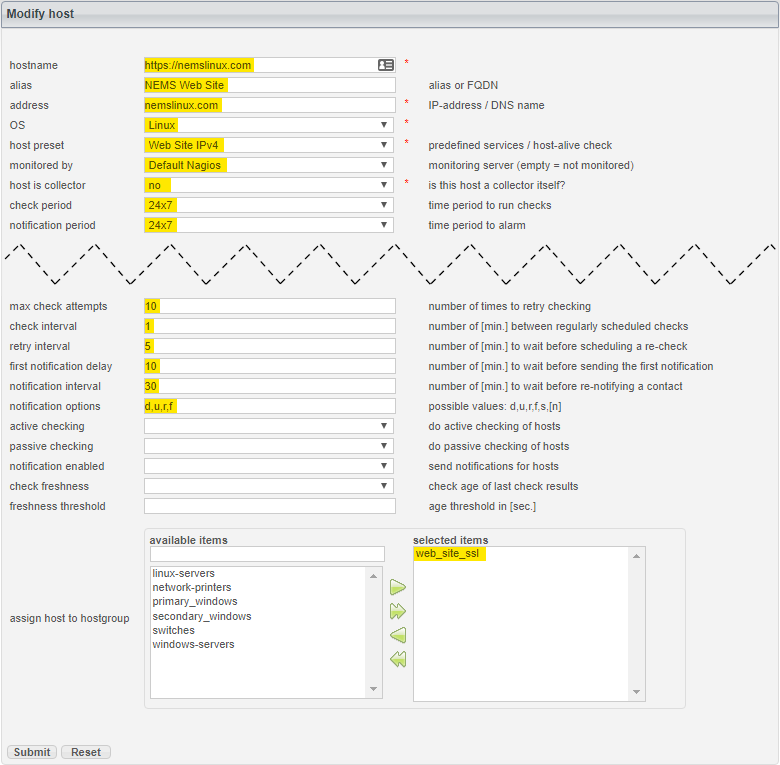

Monitor Your Web Site with check_http¶
Exercise Introduction¶
Your web site is the face of your business. If it ever goes down for any reason, or becomes sluggish, it’s important to be proactive in remedying the situation. What’s worse than having a customer contact you to let you know your web site is down? Realizing it might have been down for a week and the customers during that time didn’t let you know: They just went elsewhere.
Having your web site become sluggish or unresponsive can also damage your organic SEO standings.
In this exercise, we’ll learn how to setup NEMS Linux to notify you if your web site fails to respond for more than 10 minutes. With this skill, you will be able to proactively monitor your own, your customers’ or any http/https web site for uptime or slow response time.
If your site goes offline, or becomes unresponsive or sluggish, NEMS Linux can send you an alert by a number of methods including email, Telegram or Pushover. This capability makes NEMS Linux a fantastic tool for web designers and hosts who want to ensure their customer sites are always up so the customer doesn’t notice any downtime. If your site is hosted over SSL, NEMS can even notify you if your certificate has expired – or is about to expire. There are so many options since NEMS Linux has been built to monitor everything.
For this exercise, we’ll use the built-in check_http command. For my example, I’ll use https://nemslinux.com/ – I would suggest you do the same for the sake of the lesson, and then try changing the Host to your own domain once you understand how everything is connected.
It may appear onerous as you glance over the following steps, but keep in mind once you create your config, you can reuse it for as many web site hosts as you like by simply assigning your host to the web_site_ssl host group, which you’ll learn to create below.
Configuration is done in NEMS Configurator (NConf). Open that tool via the Configuration menu on NEMS Dashboard.
Steps¶
- The check-host-alive command, found in misccommands in NConf, is used to check hosts to determine if they are up or down. My web site, nemslinux.com, will only respond on IPv4. However, the default check-host-alive command will attempt to use IPv6. Rather than editing the sample command, let’s add a new one based upon it, but this one will only use IPv4. That way, we can still use the old command when we need IPv6 for a different host.
- Show the misccommands list.
- Edit check-host-alive
- Highlight and copy the entire command line to your clipboard.
- Click Add next to misccommands to add a new command.
- Name your new command check-host-alive-ipv4
- Paste the command line from your clipboard.
- At the very end of the command line, simply add a space, followed by -4 to tell it to use IPv4 for this check.
- Save the new command.

Create New misccommand to check-host-alive Using IPv4
- Our commands are ready for us, so now it’s time to setup our Host Preset. We want to create one for IPv4 Web Sites. That way, we can reuse the preset for every IPv4-based web site we want to monitor with NEMS Linux.
- Add a new host preset.
- Name your preset Web Site IPv4
- Set the host alive check to the new command you created in Step 2: check-host-alive-ipv4
- Save your host preset.

New Host Preset for IPv4 Web Sites
- So far, everything we’ve done can be reused for any web site whose hostname resolves to an IPv4 address. From here forward however, we’ll be setting up our host group specifically for a secure (SSL) web site.
- Add a new hostgroup.
- Call this web_site_ssl
- Leave everything else as is and save your new hostgroup.

New hostgroup for web_site_ssl
- Why would we create a new hostgroup if it has no settings beyond a name? Well, this is where the magic happens. We now have a check command, a check host alive command, a host preset and a hostgroup. Now, we can link them all together, starting with an Advanced Service. Remember, the idea here is that everything we do can be assigned to as many hosts as we like. No having to redo all this for the next web site.
- Click Add next to Advanced Services.
- Name your service: Web Site (SSL)
- Give it an alias: Uptime of SSL Web Site
- Set the check period and notification period to 24x7
- In assign advanced-service to hostgroup, highlight the hostgroup we created (web_site_ssl) and press the green arrow to add it to the selected items list.
- Under contact groups be sure to add admins as well. Otherwise, you won’t receive notifications.
- Set your notifications as follows:
- max check attempts: 10
- check interval: 1
- retry interval: 5
- first notification delay: 10
- notification interval: 30
- notification options: w,u,c,r,f
- Finally, set your service parameters to: -S --sni
- Save your advanced service.
Tip
The -S tells check_http that this site is using SSL, and the --sni enables SNI (Server Name Indication) since I use CloudFlare for SSL on nemslinux.com, and therefore my resolving IP address is associated with more than one domain name. For your site, if you have any trouble, try removing SNI by simply omitting --sni. For the full documentation surrounding the check_http command, visit the check_http documentation.
.

Creating an Advanced Service to Check SSL Web Sites
- Finally, let’s add our web site host. From now on, this is the only step you have to take to add more sites to your NEMS Linux server.
- Add a new host.
- Set the following:
- hostname:
https://nemslinux.com- alias: NEMS Web Site
- address: nemslinux.com
- OS: Linux
- host preset: Web Site IPv4 (See what we did there?)
- monitored by: Default Nagios
- host is collector: no
- check period: 24x7
- notification period: 24x7
- max check attempts: 10
- check interval: 1
- retry interval: 5
- first notification delay: 10
- notification interval: 30
- notification options: d,u,r,f
- assign host to hostgroup (are you ready for this?): web_site_ssl
Creating a Host to Monitor IPv4 SSL Web Site
- Save the host.
{kind=link}
- Generate your config.
Conclusion¶
If you followed the steps correctly and my web site is up, Adagios should report all is well.

NEMS Adagios Shows nemslinux.com is UP
To test what would happen if it were to start failing, change the hostname in the Host to nemslinux.com1 (which obviously will not respond), and then generate your config again.
Once you feel ready, change the Host to your own web site. If your site is SSL, you should only need to change the hostname, alias and address of the host. If it’s not SSL, repeat Step 3 above, but this time create a new hostgroup called web_site_no_ssl, and then repeat Step 4, but creating a new Advanced Service called Web Site (Non-SSL), assign it (4.5) to Web Site (Non-SSL) and leave off the SSL parameters in 4.8.